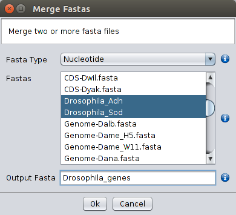

The sequences contained in different FASTA files can be merged even if they are not in the same order, as long as the sequence names are the same. This is a useful option when preparing files for phylogenetic analyses, for instance. Files are selected using the ctrl button.

Merge Fasta